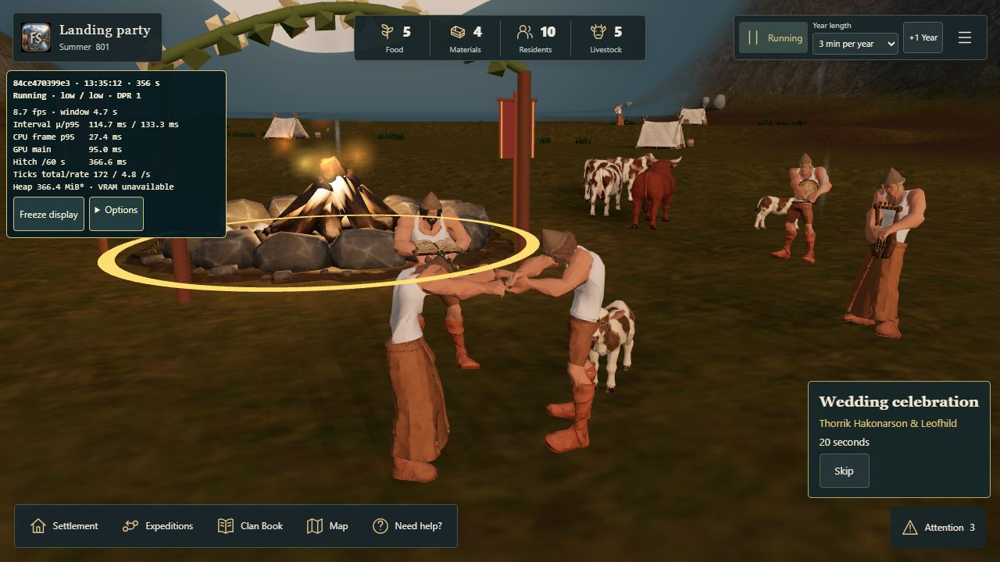
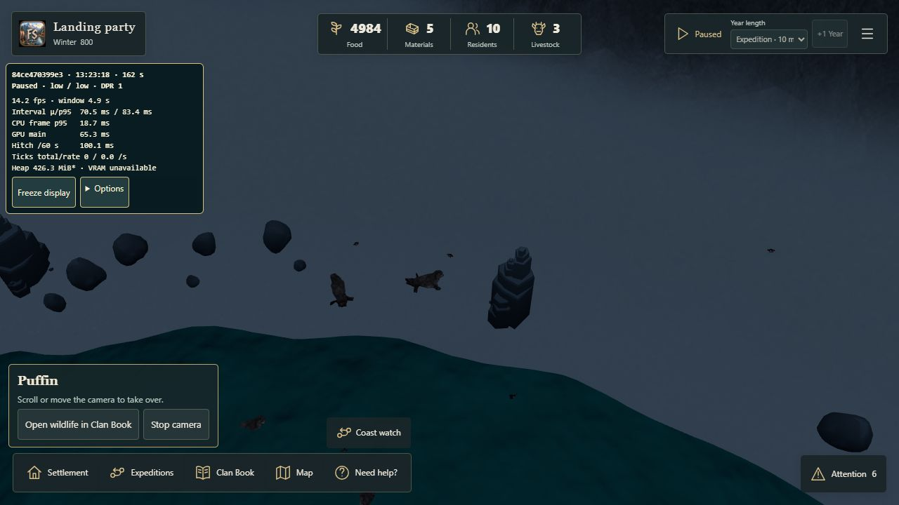

Coastal sightings and wedding feedback
Export a personal campaign first. Reload to the start menu before importing these checkpoints through Recover or import → Import campaign → Continue campaign.
Real coastal encounters
- Swimming seal checkpoint: Attention → Discoveries → the seal record. The actual seal should focus safely. With sound enabled, its existing recording plays once, including while paused. Reopening the same record in this scene does not repeat it.
- Puffin checkpoint: choose the puffin record. Try approaching from different ordinary camera angles and interrupt with the first scroll, drag or pinch. There is no approved puffin recording in the current sound pack.
Wedding
Wedding checkpoint. Import from the start menu, select the campfire → Occasion → Wedding celebration → Support gathering. Confirm the quoted real cost once and start the clock.
The bride's wreath should surround her scalp and replace her cap. It follows the head and the cap returns after release. Music starts at arrival, comes from the staged musicians and retains the usual world volumes. Wind, shore and nearby activity can remain audible. Try pause/resume and Skip; physical-device listening is an owner check.
Recorded browser checks
Full native wedding capture: the cap is replaced by the scalp-fitted wreath. At 10.2 seconds the song was playing while normal sound voices remained active, without ambience ducking.

Playing audio state · Skip cleanup · One seal call
